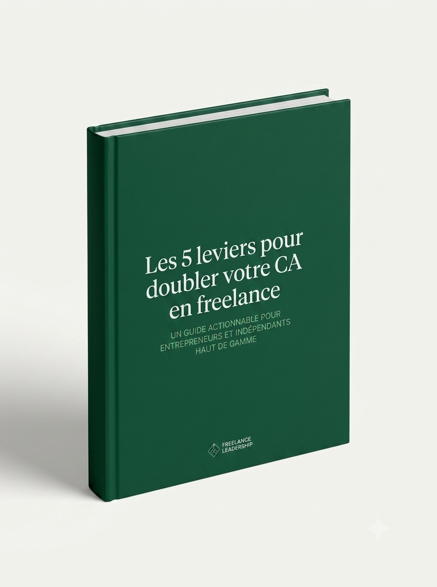

Revenus imprévisibles
Des mois à 5 000 €, d'autres à 1 500 €. Vous ne savez jamais ce que vous allez gagner le mois prochain, et cette instabilité vous épuise autant qu'elle vous freine.
Coach certifiée · +180 indépendants accompagnés depuis 2018
J'aide les freelances, consultants et créateurs à construire une activité rentable, stable et alignée avec leurs ambitions — sans sacrifier leur vie.
Réserver mon appel découverte — 100% gratuitDes mois à 5 000 €, d'autres à 1 500 €. Vous ne savez jamais ce que vous allez gagner le mois prochain, et cette instabilité vous épuise autant qu'elle vous freine.
Vous passez plus de temps à chercher des clients qu'à travailler pour eux. Et quand vous en trouvez, ils négocient vos tarifs à la baisse ou disparaissent après une mission.
Vous savez ce que vous faites, mais votre marché ne le sait pas. Pas de positionnement clair, pas de message qui accroche, pas de flux entrant régulier.
Pas de process, pas d'offre packagée, pas de système. Chaque client est un cas particulier, chaque mission repart de zéro. L'activité avance mais ne se structure pas.
Vous faites les mêmes choses depuis deux ans avec les mêmes résultats. Vous savez qu'il y a un palier à franchir — mais vous ne voyez pas comment le faire seul.
Si vous vous reconnaissez dans au moins deux de ces situations, vous êtes exactement là pour qui j'ai conçu mon accompagnement.
Réserver un appel gratuit pour en parlerVoici comment on passe d'une activité qui survit à une activité qui performe.
On regarde tout sans filtre : chiffre d'affaires réel, taux horaire effectif, temps de prospection, marges, positionnement. La vérité sur votre situation en 60 minutes.
Un plan d'action sur mesure, pas un template générique. Positionnement, offre, tarifs, canal d'acquisition principal — tout est adapté à votre profil, votre marché et vos objectifs réels.
Je vous accompagne dans l'exécution, semaine après semaine. On débloque ce qui coince, on teste ce qui est incertain, on avance sans se perdre dans des détails secondaires.
On mesure ce qui fonctionne, on ajuste ce qui ne fonctionne pas encore. L'activité s'améliore en boucle courte, sans attendre trois mois pour savoir si on est sur la bonne voie.
L'objectif n'est pas que vous dépendiez de moi indéfiniment. À la fin de l'accompagnement, vous avez un système qui tourne sans moi et des réflexes que vous gardez pour toujours.
Pour les indépendants qui ont besoin d'un regard extérieur précis et de décisions claires sur un sujet prioritaire : tarification, offre, positionnement ou acquisition.
Résultat attendu : une lecture claire de là où vous bloquez et quoi faire en priorité.
Réserver un auditL'accompagnement le plus complet, pour ceux qui veulent transformer leur activité en profondeur avec un suivi hebdomadaire et une stratégie co-construite sur la durée.
Résultat attendu : chiffre d'affaires stable et en croissance, système d'acquisition opérationnel.
Réserver un appel découverte
La puissance du coaching individuel combinée à l'intelligence d'un groupe de pairs. Sessions live, exercices pratiques, hot seats et accès à une communauté d'indépendants sérieux.
Résultat attendu : offre repositionnée, premiers clients acquis via le nouveau système.
Rejoindre la prochaine cohorte« En six mois, j'ai arrêté de brader mes prestations, j'ai structuré une offre à 4 000 € et j'ai doublé mon chiffre d'affaires. Élise ne vous dit pas ce que vous voulez entendre — elle vous dit ce qui va vraiment changer les choses. »
« J'avais l'impression de courir dans tous les sens sans avancer. En 10 semaines de programme collectif, j'ai clarifié mon positionnement, revu mon pricing et signé trois nouveaux contrats long terme. Le retour sur investissement est sans discussion. »
« Je vendais à la journée depuis 4 ans. Élise m'a aidé à créer une offre packagée à 2 800 € que j'ai vendue quatre fois dans les 60 jours suivants. Je gagne plus en travaillant moins. C'était exactement l'objectif. »
Ils ont travaillé avec moi
Avant d'être coach, j'ai été consultante en stratégie de croissance pendant 8 ans — d'abord en cabinet, puis à mon propre compte. J'ai connu les mois à 1 200 €, les clients qui disparaissent, les offres mal pensées, la prospection anxiogène.
C'est en résolvant ces problèmes un par un pour moi-même que j'ai commencé à les résoudre pour d'autres. Depuis 2018, j'accompagne des indépendants à construire des activités rentables avec des méthodes que j'ai moi-même testées.
Ma conviction : les freelances échouent rarement par manque de compétences. Ils échouent parce que personne ne leur a appris à gérer leur activité comme un business.

32 pages de méthodes concrètes utilisées avec +180 indépendants. Pas de théorie : des frameworks activables cette semaine.
Mon accompagnement est plus efficace si vous avez déjà au moins quelques mois d'activité et un premier client. Si vous êtes en phase de démarrage, la séance découverte reste utile : on fera le point et je vous orientera vers les bonnes ressources si mon format ne correspond pas encore à votre stade.
Environ 2 à 3 heures par semaine, séances comprises. C'est peu, mais c'est structuré. Vous ne ferez pas tout — vous ferez ce qui a le plus d'impact à chaque étape. Les résultats viennent de la régularité, pas du volume de travail supplémentaire.
Ça dépend de votre point de départ et de l'effort que vous mettez. En moyenne, mes clients constatent une première amélioration mesurable (nouveau client, hausse de tarif acceptée, pipeline rempli) sous 6 à 8 semaines. Les transformations profondes — chiffre d'affaires stable, système d'acquisition autonome — prennent 3 à 6 mois.
On commence par un diagnostic complet lors de la première séance. Ensuite, chaque session est structurée : review de la semaine, travail sur un sujet prioritaire, plan d'action pour la semaine suivante. Entre les séances, vous avez accès à la messagerie pour les questions urgentes et les feedbacks en temps réel.
Totalement. 45 minutes pour faire le point sur votre situation, identifier vos blocages principaux, et voir si mon approche vous correspond. Je ne pratique aucune technique de vente sous pression. Si ce n'est pas le bon moment ou le bon format pour vous, je vous le dirai.
45 minutes gratuites. Pas de script de vente. Juste une conversation honnête sur votre situation et ce qui peut changer.
Réserver mon appel découverte gratuitRéponse sous 24h · Sans engagement · Session en visio ou téléphone
Remplissez ce formulaire et je vous contacte sous 24h pour convenir d'un créneau. Court et direct — je lis chaque demande personnellement.
Vous repartez avec au moins une piste concrète, que vous travailliez avec moi ou non.